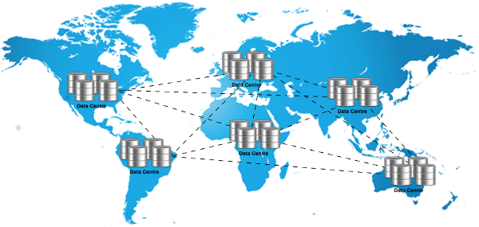
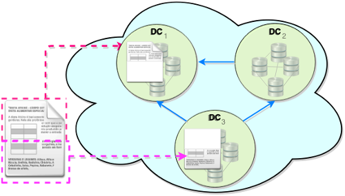
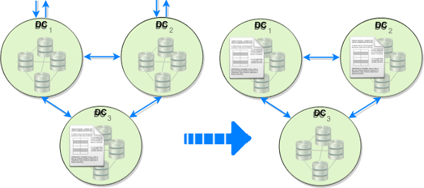

|
This tool for Adaptive Replication is a Java GUI tool that emulates as many Data Centres (DCs) as the have been set in the configuration file (XML file) and shows in which DC replicas are kept and their strength. The strength is an indication of how long the replica may be kept in a DC. The access of the data, when reading and writing it, affects the likelihood that the data will be replicated in the DC, if it is not already replicated in that DC, or removed from a DC with a replica.
A common technique to reduce latency is the replication of data between different data centres in a system with multiple data centres distributed around the world, as shown in Figure 1.
|  |
|
Fig. 1. Mutiple data centres. |
But keeping multiple replicas is an expensive commodity given the increase in storage requirements and write operations as a write need to be propagated to all the other data centres with a replica. The data could be placed in only one data centre, in which case there is not any replication, or a copy could exist in all the available data centres, which it is known as full replication. Alternatively the data may be located in some but not necessarily all the data centres such that the number, location and data is determined at run time, which it is known as adaptive replication.
The replications may be grouped, base on its existence, into two types; static replication where a replica persist until it is deleted by a user or its duration expires, and dynamic replication where the creation and deletion of a replica are managed automatically and normally directed by the access pattern of the data used by the users. In static replication the major drawback is their inability to adapt to changes in the access pattern of the data used by the users.
Also there are two types of replication based on their effect on the data; partial data replication is concerned with the number of parts the full data is composed of, all of which may be located in different parts of the overall system, i.e. data centres, within a data centre in different nodes or at the client-side, whereas adaptive geo--replication is concerned in what data and where the data or part of the data is located within the overall system of data centres and how many replicas exist simultaneously.
It is concerned with the different parts of the data, and finding data types that allow breaking the data into smaller parts. It avoids replicating large data structures so helping to reduce the bandwidth and latency. The main principal is that not all the full data is always required, as shown in Figure 2. This introduces the need to find data structures which allow breaking the data into parts without loosing information, and maintaining the data integrity and required invariants.
|  |
|
Example of Partial Replication of data between multiple data centres.
|
This requires to define new Conflict-free Replicated Data Types (CRDTs) which allows splitting the data into different parts that may be placed in multiple data centres.
This is also know as ``Adaptive Location of Replicas". In the example shown in Figure \ref{fig:adaptive_location_replicas} data reads/writes to data centres 1 and 2 make the data replica to move from data centre 3 to data centre 1 and 2 ensuring that the data is closer to where the reads and writes are requested based on the specified objectives and constraints.
|  |
|
Example of adaptive geo--replication between data centre. |
Adaptive Geo--replication is concerned with:
| Location: | On which data cetre to place the replicas so it is
- Improved the latency: reduce distance between user and replica, - Improved the data transmission quality. |
| Selection: | Which data to replicate. |
| Number: | How many replicas to have so it is
- Reduced unnecessary replicas which * Reduces storage consumption and
* Reduces required network bandwidth. |
In general terms any read operation in a data centre reinforces the need for a replica of the data in such data centre, similarly but perhaps with a different degree it happens with the write operations. But write operations decrease the need for a replica of the data in the other data centres with replicas, so eventually these data centres will not have any replica of the data. Given that we do not want to keep replicas when there are not necessary replica strength will decay as time pass, but always making sure that the data is present (replicated) at least in a pre-set number of data centres. There is also a question about how the replication should decay as time pass, e.g. linear, exponential or arctangent.
| A tool from SyncFree project |
![[SyncFree]](images/log.png) Introduction
Introduction